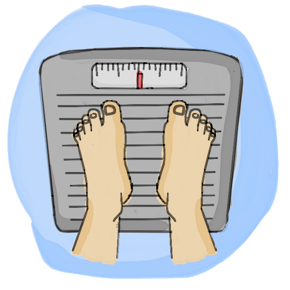

Ex 2 - Crie um programa que leia o nome, a altura e o sexo de uma pessoa, calcule o peso ideal com base nas fórmulas:
para homens, 22 * (altura²) e para mulheres, 21 * (altura²) e mostre o resultado do peso ideal na tela.
<!DOCTYPE html>
<html lang="pt-br">

<head>
    <meta charset="UTF-8">
    <meta name="viewport" content="width=device-width, initial-scale=1.0">
    <title>Ex3_2</title>
    <link rel="stylesheet" href="styles/styles.css">
</head>

<body>
    <section class="menu">
        <h1>-- Programa: Peso Ideal --</h1>
        <div>
            
            <p>Nome:
                <input type="text" id="inNome" placeholder="Informe seu nome" class="texto">
            </p>
            <p>Altura:
                <input type="text" id="inAltura" placeholder="Informe a sua altura" class="texto">
            </p>
            <p>Sexo:
                <input type="radio" name="sexo" id="rdMasculino">  Masculino
                <input type="radio" name="sexo" id="rdFeminino">  Feminino
            </p>
            <p>
                <input type="button" id="btCalcular" value="Calcular Peso" class="botao">
                <input type="button" id="btLimpar" value="Limpar Campos" class="botao">
            </p>
            <h3 id="outNome"></h3>
            <h3 id="outPeso"></h3>
        </div>
    </section>
</body>
<script src="js/Ex3_2.js"></script>

</html>